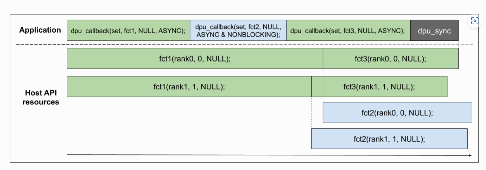
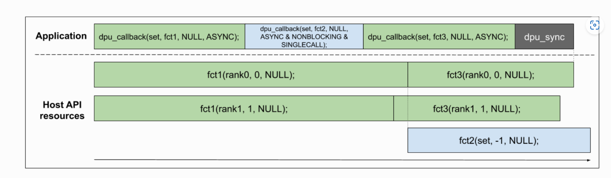

PIM Learning¶
Structure of DPU¶
从图中，可以看到，一个DIMM module上有多个DRAM chip，在一个DRAM chip中有多个Bank，给每个Bank加上一个DPU处理单元，在总线上加上一个control interface来对这些DPU进行控制。在一个DIMM中，所有chip共享同一根内存总线，一个chip内的所有bank可以同时跟CPU进行内存通信，即一个chip内的所有DPU可以跟CPU进行内存通信。
{kind=link}
而在一个DPU中，有64MB的MRAM，64KB的WRAM和4KB的IRAM.
{kind=link}
由于DPU的硬件特性，在ISA上有以下特征:
{kind=link}
- No FPU
- No vectorized instructions
- Rich set of conditions for jump
- 8x8 multiplication instruction, up to 32 ops for 32x32
Coding on UPMEM¶
Standard library functions — UPMEM DPU SDK 2024.1.0 Documentation
Coding Tips¶
- Runtime Library在重启启动时不会重置系统资源，包括Mutexes、semaphore和barrier counter
- shorts和integers的乘法和除法代价很高
- 尽量避免使用浮点和64位变量
- 建议使用16个tasklet来减少内存访问的延迟
- 每个 DPU 只能访问其自己的 MRAM 中的数据。建议组织数据流，使DPU执行尽可能独立于外部数据。
- 与 DPU WRAM 的通信比与 MRAM 之间的复制慢。此外，与 MRAM 相比，WRAM 是更小的存储器。因此，DPU WRAM 应该用于共享少量数据。共享大缓冲区，应该使用copies to/from MRAM
线程管理和同步¶
在UPMEM的DPU中，将线程抽象为Tasklet，提供了Mutexes, Semaphore, Barrier, Handshake的四种进程同步方法
运行参数
NR_TASKLETS用于定义tasklet的数量。STACK_SIZE_DEFAULT用于定义所有未指定堆栈的tasklet的堆栈大小。STACK_SIZE_TASKLET_<X>用于定义特定tasklet 的堆栈大小。
dpu-upmem-dpurte-clang -DNR_TASKLETS=3 -DSTACK_SIZE_DEFAULT=256 -DSTACK_SIZE_TASKLET_1=2048 -O2 -o tasklet_stack_check tasklet_stack_check.c
Mutexes
三个函数，初始化mutex，获取mutex，解锁mutex
Semaphore
一般仅用于需要计数器同步的情况，sem_take 和 sem_give 分别减少和增加信号量计数器。如果计数器为零或小于零， sem_take会挂起调用的tasklet 执行，直到另一个tasklet 调用 sem_give
Barrier
可以确保特定数量的tasklet在继续运行之前运行到同一起点上，先初始化barrier等待的tasklet数目，然后调用就可以wait
Handshake
Handshake指的是可以实现在其中一个Tasklet完成特定任务后启动另一个Tasklet，通过wait_for和notify实现，其中wait_for的参数是tasklet通过me()方法获取的sysname_t
内存管理¶
内存模型
在UPMEM的DPU中，有两种用途的Memory，分别是WRAM和MRAM，其中WRAM是程序执行时的内存，存放了stack, 全局变量和heap和手动分配的shared memory等资源，而MRAM可以被理解为“external peripheral”，访存速度较慢。
WRAM Heap Allocation
有三种allocator可以在WRAM上分配，分别是incremental allocator, fixed-size block allocator, buddy allocator.
- Incremental allocator：使用这种allocator时，有几点需要注意
- Runtime Library对于WRAM的组织方式是，除了program运行时所需的内存，剩余的所有内存都作为"free area"
- 没有free方法，一个task动态申请一个Buffer后，这个Buffer会一直保留该task的property直到程序结束
mem_reset()方法用于clean-up heap，例如当一个DPU被程序多次启动时
- Fixed-Size block Allocator: 用于用户分配固定块大小的内存
- 需要使用
fsb_allocator_t，通过fsb_alloc()来分配空间，并通过fsb_get()来获取一个allocated block
- 需要使用
fsb_alloc(unsigned int block_size, unsigned int nb_of_blocks)
fsb_get(fsb_allocator_t allocator)
fsb_free(fsb_allocator_t allocator, void* ptr)
- Buddy Allocator: 即OS中提到的buddy allocation method
- 分配的内存大小不能超过4096B，最小是32B，自动和DMA-transfer-size对齐
buddy_init(unsigned int buffer_size)
buddy_alloc(unsigned int buffer_size))
buddy_free(char * memory)
MRAM Management
三种变量声明，__mram, __mram_noinit, __mram_ptr，前者将变量声明到MRAM上，中间代表该变量没有初始值，后者代表一个指针指向MRAM上的变量或者声明一个extern的MRAM variable.
在一般情况下，对于一个在MRAM中的8B变量，会由WRAM中的pre-defined cache来处理。Implicit write access of MRAM variables会经历如下三个过程：从WRAM cache中读8B，修改其中的x bytes，再把8B写回到cache中，并且8B以下的修改是非多线程安全的。
Direct access to the MRAM
主要由两个函数来操作：
- 需要保证source和target的address都是8 bytes对齐的，并且transfer size必须是8的倍数，并且不能超过2048
mram_write(const void *from, __mram_ptr void *to, unsigned int nb_of_bytes)
mram_read(const __mram_ptr void *from, void *to, unsigned int nb_of_bytes)
Exception¶
一个DPU Program可能因为三种fault停止，只能通过dpu-lldb 来打印stop reason，host API只能看到发生了错误
- Memory fault
- DMA fault
- Runtime Library fault
Controlling the execuation of DPUs¶
Allocation
dpu_alloc: 分配指定数量的GPU
dpu_free: 释放一组由dpu_alloc分配的DPU
dpu_get_nr_ranks: 返回一个DPU set中的rank数量
dpu_get_nr_dpus: 返回一个DPU set中的DPU数量
Loading Programs
dpu_load：该函数输入一个二进制文件路径，加载二进制文件到指定的DPU上，并存储程序信息到给定的指针上。加载后，该程序持久保存在DPU内存中，可以由应用程序多次启动
dpu_load_from_memory：该函数加载一个在内存中的程序
Executing Programs
dpu_launch：该函数启动给定集合的所有DPU，某些资源会在启动前重置
DPU_SYNCHRONOUS：暂停应用程序，直到请求的 DPU 完成执行（或遇到错误）DPU_ASYNCHRONOUS立即将DPU的控制权交还给应用程序，应用程序将负责通过dpu_status或dpu_sync检查DPU的状态
Communication with host applications¶
Memory Interface
使用这些内存传输函数存在一些限制：
- IRAM和MRAM地址要求8B对齐，WRAM地址要求4B对齐
- symbol name是DPU code中的WRAM或者MRAM变量名组成
- 与 DPU WRAM 的通信比与 MRAM 之间的复制操作更慢。此外，与 MRAM 相比，WRAM 是更小的存储器。因此，DPU WRAM 应该用于共享少量数据，大数据应放到MRAM中
- 每个DPU只能访问自己的MRAM中的数据，所以DPU执行应尽可能独立于外部数据
dpu_copy_from(struct dpu_set_t set, const char *symbol_name, uint32_t symbol_offset, void *dst, size_t length): 从DPU上copy到buffer中
dpu_broadcast_to(struct dpu_set_t set, const char *symbol_name, uint32_t symbol_offset, const void *src, size_t length, dpu_xfer_flags_t flags)：将一个buffer广播到所有DPU中
dpu_push_xfer(struct dpu_set_t set, const char *symbol_name, uint32_t symbol_offset, const void *src, size_t length, dpu_xfer_flags_t flags)：在一次传输中将不同的buffer传输到一组DPU中
Rank Transfer Interface
dpu_prepare_xfer：将buffer属性赋给一组DPU，可以在dpu_push_xfer方法中使用
dpu_push_xfer：使用之前定义的缓冲区，按照给定方向，DPU symbol name，DPU symbol length进行传输
Advanced Features of Host API¶
Multiple Ranks Transfer
在一个具有多个DPU rank的DPU set中，使用copy function默认会使用多线程来进行copy操作这些Multi-ranks operation，可以以下方式禁用：
Asynchronism
dpu_broadcast_to和dpu_push_xfer可以通过将dpu_xfer_flags_t设置成DPU_XFER_ASYNC(默认是DPU_XFER_DEFAULT)来将这些操作变为异步操作，rank可以独立的完成transfer操作。在同步模式下，API会等待set中的所有rank完成一个操作后才会执行另一个，异步模式会独立的管理每个rank。
dpu_sync：使用该函数可以等待DPU set中的所有rank的异步操作执行完成
Callback
dpu_error_t dpu_callback(struct dpu_set_t set, dpu_error_t (*fct)(struct dpu_set_t set, uint32_t rank_id, void *arg), void *arg, dpu_callback_flags_t flags);
dpu_callback：该回调函数允许用户在一些异步操作之间进行函数调用，根据不同的flags会产生不同的行为
+ DPU_CALLBACK_DEFAULT: 默认情况下，dpu_callback函数会在DPU set中的每个rank上执行一次，并等待所有rank执行完毕
+ DPU_CALLBACK_ASYNC：每个rank的dpu_callback调用独立进行，不会等待，需要调用dpu_async进行同步
+ DPU_CALLBACK_ASYNC | DPU_CALLBACK_NONBLOCKING：对于NONBLOCKING来说，该回调独立于之后发起的任何dpu_callback,dpu_sync不会等待该回调结束，需要由用户来确保完成。同时，hostAPI需要更多的线程资源来处理同时运行的多个callbacks，所以需要修改dpu_alloc中的nrThreadsPerRank

+ DPU_CALLBACK_ASYNC | DPU_CALLBACK_SINGLE_CALL: 与常规的异步行为相同，但是他只会对相同的DPU Set上执行一次回调函数
+ DPU_CALLBACK_ASYNC | DPU_CALLBACK_SINGLE_CALL | DPU_CALLBACK_NONBLOCKING:

{kind=link}
{kind=link}
Logging¶
Logging from dpu-lldb
在DPU程序中直接printf即可
Logging from Host
dpu_log_read(struct dpu_set_t set, FILE *stream): 使用该函数，可以将DPU程序中的log打印到文件中(stdout)，但是只有在DPU_FOREACH中才能使用这个函数。潜在风险在于，Log保存在DPU的MRAM的circular buffer中，在主机端调用时当程序的完整LOG大于缓冲区大小时，会发生错误
可以使用STDOUT_BUFFER_INIT(size)来设定缓冲区大小
Measuring performances¶
RUNTIME Environment提供了一套函数，可以检测硬件性能计数器。可以通过CLOCKS_PER_SEC将DPU周期计数转换成时间(秒)。该变量在DPU端可用，也可以通过拷贝在主机端使用。第二个
+ perfcounter_config
+ COUNT_CYCLES: 周期包括指令的执行时间和内存传输
+ COUNT_INSTRUCTIONS：计算已用的指令
+ COUNT_SAME
+ 第二个变量设置为true，代表重置计数器，否则代表保留当前计数器值
+ perfcounter_get: 返回计数器值
一个使用例子：host测量了DPU程序中循环的执行时间
#include <perfcounter.h>
#include <stdio.h>
__host uint32_t nb_cycles;
int main() {
perfcounter_config(COUNT_CYCLES, true);
int loop = 1e7;
while (loop)
loop--;
nb_cycles = perfcounter_get();
return 0;
****#include <dpu.h>
#include <stdio.h>
#include <time.h>
#ifndef DPU_BINARY
#define DPU_BINARY "./frequency_example"
#endif
static inline double my_clock(void) {
struct timespec t;
clock_gettime(CLOCK_MONOTONIC_RAW, &t);
return (1.0e-9 * t.tv_nsec + t.tv_sec);
}
int main() {
struct dpu_set_t set, dpu;
DPU_ASSERT(dpu_alloc(1, NULL, &set));
printf("DPU allocated\n");
DPU_ASSERT(dpu_load(set, DPU_BINARY, NULL));
double start = my_clock();
DPU_ASSERT(dpu_launch(set, DPU_SYNCHRONOUS));
double end = my_clock();
// retrieve number of cycles on DPU
uint32_t nb_cycles;
DPU_FOREACH(set, dpu) {
DPU_ASSERT(
dpu_copy_from(dpu, "nb_cycles", 0, &nb_cycles, sizeof(uint32_t)));
}
// retrieve DPU frequency
uint32_t clocks_per_sec;
DPU_FOREACH(set, dpu) {
DPU_ASSERT(dpu_copy_from(dpu, "CLOCKS_PER_SEC", 0, &clocks_per_sec,
sizeof(uint32_t)));
}
printf("DPU cycles: %u\n", nb_cycles);
printf("DPU time: %.2e secs.\n", (double)nb_cycles / clocks_per_sec);
printf("Host elapsed time: %.2e secs.\n", end - start);
DPU_ASSERT(dpu_free(set));
return 0;
}
Debuging on UPMEM¶
Supported Commands in dpu-lldb¶
process launch: Start a DPU programprocess continue: Resume a DPU programprocess interrupt: Stop a DPU programthread list: List all the threads of a DPU and where each thread is atthread select: Select a thread as the currently active threadthread step-in: Source level single step in current threadthread step-over: Source level single step in current thread, stepping over callsthread step-inst: Single step one instruction in current threadthread step-inst-over: Single step one instruction in current thread, stepping over callsthread step-out: Finish executing the function of the currently selected frame and return to its call sitethread until: Run the current or specified thread until it reaches a given line number or address or leaves the current functionthread backtrace: Show the stack of the current threadframe select: Select a frame by index from within the current thread and make it the current frameframe info: List information about the currently selected frame in the current threadframe select --relative=<n> or up <n>: Go up “n” frames in the stack (1 frame by default)frame select --relative=-<n> or down <n>: Go down “n” frames in the stack (1 frame by default)frame variable: Show frame variablestarget variable: Read global variables for the DPU programbreakpoint set|list|delete: Manage breakpoint in the DPU programregister read: Dump the contents of one or more register values from the current frameregister write: Modify a single register valuememory read: Read from the memory of the DPU programmemory write: Write to the memory of the DPU programdisassemble: Disassemble specified instructions of the DPU program
一些dpu-lldb常见操作：
dpu-lldb
process launch --stop-at-entry
process continue
frame variable/x checksum
target variable/x checksum
breakpoint set --source-pattern-regexp "return"
parray/x 20 &input[0]
memory read
memory write -i sample.bin '&buffer[0]'
内存映射：DPU的所有内存都会映射到dpu-lldb中的一个地址空间, IRAM需要通过disassemble来读取
+ WRAM: 0x00000000 - 0x00010000
+ MRAM: 0x08000000 - 0x0c000000
+ IRAM: 0x80000000 - 0x80008000